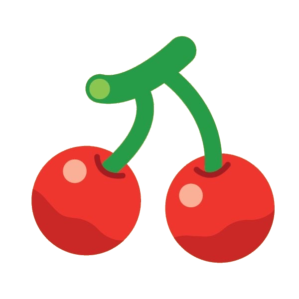

Critterpedia
Fish Tracker
🌎 North
🌏 South
🐟 Fish
🦋 Bugs
🐚 Sea
🏛️ Museum Collection
0 / 80
All
🎣 Now
0
❌ Need
0
⚠️ Leaving
0
✨ New
0
✅ Done
0
🌧️ Rain
▼ More Filters
🔄 Reset List
Location
Shadow Size
All
Tiny
Small
Medium
Large
Very Large
Huge
Narrow
Month (override auto-detect)
Auto
Jan
Feb
Mar
Apr
May
Jun
Jul
Aug
Sep
Oct
Nov
Dec
Showing 80
Sort: Name
Sort: Price ↓
Sort: Price ↑
Sort: Location
🐟
No matches found
↑